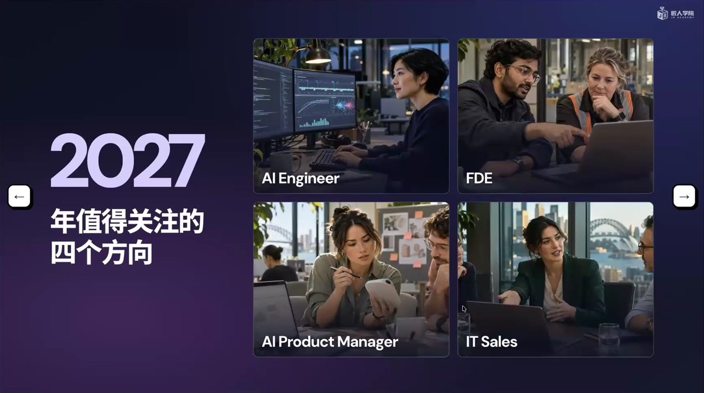
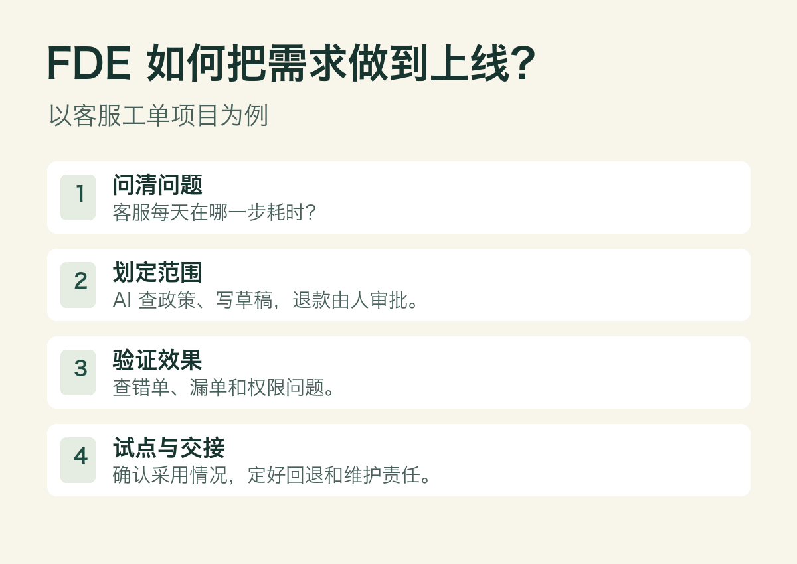
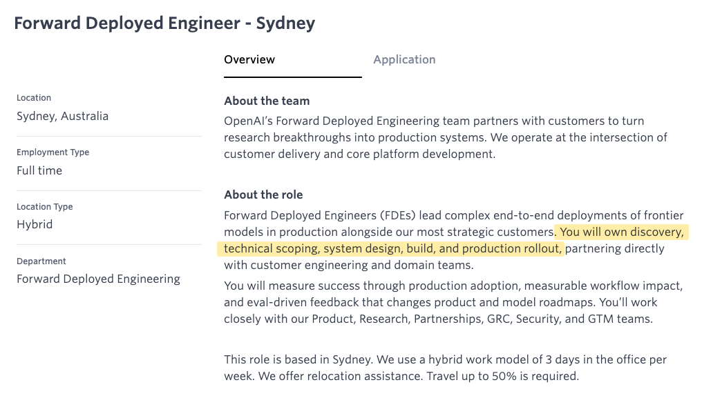

你周末做了一个客服 AI。它能读政策，还能把退款解释写得像模像样。
周一拿去给业务同事看，对方问了三句：“旧政策怎么处理？退款谁审批？写错了谁接手？”
这三句问的是企业现场。你可以自己学会搭一个 Agent，但真实用户怎么用、公司愿意开放什么权限、谁来承担上线后的结果，得在项目里才能遇到。
11 月 19 日，匠人学院创始人 Lightman 在直播里提到，2027 年澳洲职场有四个方向值得关注。我们用四个工作场景，看看每条路各自卡在哪。

01｜AI Engineer：让系统稳定跑起来
拿报修助手举例。正常情况，它会查政策、收集信息，再让用户确认提交。
但同一个请求连点两次，系统会不会建两张工单？接口超时，用户等多久才该转人工？个人项目可以写脚本模拟这些问题。要判断哪种异常最常见、恢复是否够快，还需要线上记录和一线反馈。
02｜FDE：把客户的问题推进到上线
客户说“想用 AI 做客服”。FDE 得先去看工单：团队到底耗在查政策、分工单，还是处理退款？第一轮先动哪一段，谁能给数据，谁说了算？
FDE 是 Forward Deployed Engineer，也就是一线交付工程师。要跟客户把问题问清楚，再带着团队把方案做出来，推进上线和采用。
03｜AI Product Manager：决定什么值得做
会议助手能从纪要里提取行动项。产品经理得决定，遇到负责人说不清的任务时，是追问、留空，还是交给用户确认。
自己能做出可点的原型。想知道团队愿不愿意改掉旧习惯、哪类误判会让他们关掉功能，还得看真实用户怎么用。
04｜IT Sales：让企业愿意买、愿意试
同一套系统，业务负责人想少漏单，IT 想知道接不接得上，安全团队要看数据去哪儿，采购关心预算和合同。
产品演示可以自己练。怎样找到有预算的负责人、让几方同意先试一小段流程，得在真实商机里反复碰。
为什么 FDE 尤其难靠自学补齐？
回到客服项目。你原本打算接入整个知识库。到了企业才知道，一部分历史资料还没通过安全审批，业务又只给你两周试点。
你现在要做的决定是：改用哪批资料，哪些退款必须人工审批，拿什么数据证明两周后值得继续。决定做完，还要约业务、IT 和安全团队一起签字确认。

OpenAI 的悉尼 FDE 招聘也写得具体。这个职位要负责需求发现、技术定范围、系统设计、开发与生产上线，并跟踪实际采用和对业务流程的影响。招聘要求包含面向客户工作的五年以上工程或技术部署经验。

你可以一个人把 Demo 做出来。到了交付现场，你还要解释为什么这样做、哪里可能出错，以及谁愿意接过去用。
想练 FDE，先看你缺的是哪一段
已经能独立开发、调试 AI 应用，选 FDE Tech。 10 周围绕企业交付练习。从客户调查、方案和预算开始，做系统接入、权限控制和评测，再拿着试点方案做技术评审与交接。
已经做过业务、产品、咨询、BA 或项目交付，选 FDE Business。 8 周从熟悉的流程切入，练客户调查、做 AI 工作流、核对结果，再带着验证记录说明为什么值得试点、需要谁配合。
比如 Business 班的练习会把网站和邮件里的询盘合到一起。你要处理重复记录、给缺信息的客户起草追问，由销售确认后再发。最后用原始记录回放一遍，检查有没有漏单或误发。
找一段你负责过的项目，试着讲清三个问题：谁在用？你做了什么取舍？怎么知道结果达标？ 你卡住的那一问，就是下一步要补的项目经验。
长按识别下图二维码，查看匠人学院两门 FDE 职业进阶班的课程安排与适合人群。